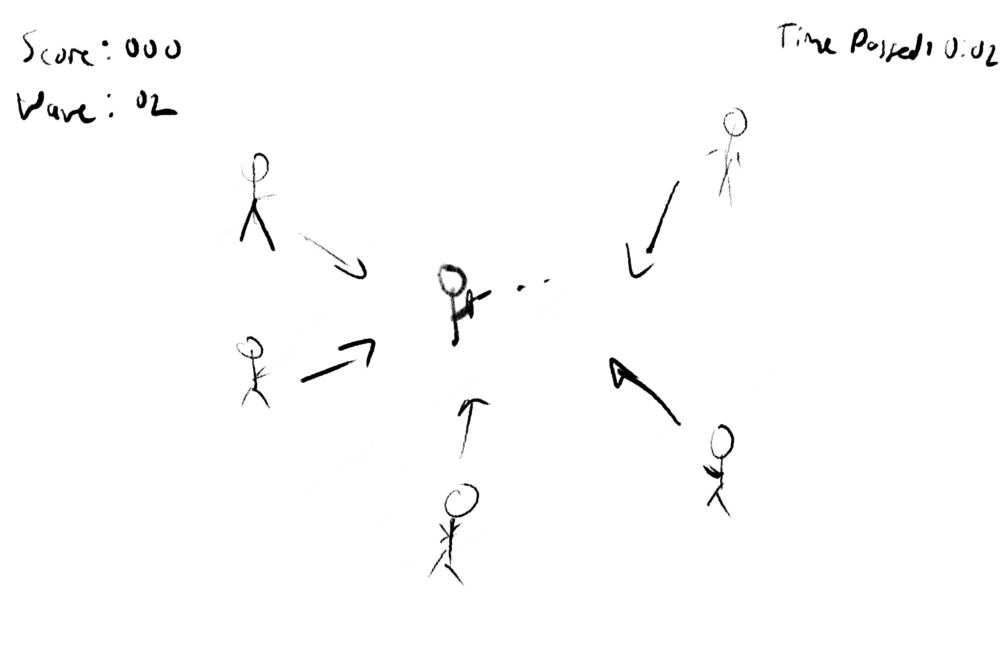

Proposal 3: Zombie Shooter
For my Project 3, I wanted to make a shooter utilizing PIXIJS. The player will be able to walk around the screen using the WASD keys to combt a Zombie hoard, who close-in on the player. The player has to shoot them to remove them from the game. The goal is to last as long as possible as it's wave-based. There will be a score tracker and elapsed time to see how long the player has lasted. I want to try boss zombies that have more health or are faster than normal.
Controls will primarily be mouse pointer to aim, left click to fire, and WASD to move. I don't know how well this will work for mobile at the moment, so that will be put on the backburner.
There will be classes for both the player and enemies, with the player having a method allowing them to fire. As it fires actual rounds, the player will need to reload, adding a strategic element on when that should happen. There will probably be a power-up every 30 or so kills that will give the player unlimitied rounds for a few seconds. In term of how the player wll turn, I have found a helpful resource on how to make a function that rotates the player sprite to follow the mouse cursor. The player will lose on the third hit, and I would like a diagetic way of telling the player, likely using a
Zombies will, of course, have a slower movement speed than the player, but as the game continues, there will be more and more of them spawning each wave. They will be spawned randomly along the border of the gamewindow, just off screen so that they aren't visible. Like the player to the mouse cursor, the zombies will be following the player character move, similarly to the ship following the mouse in the pixi-game homework. The plan is every wave will include a boss with a special ability unlike the standard enemies, such as increased speed or more health. They will be a different color to differentiate them.
To make the rotations look smoother, the game will be in a top-town perspective.
When the player dies, the game will make the player see how many waves they lasted, their overall score, and how long they lasted.
Concept Sketch:
